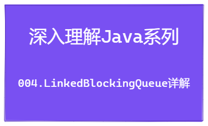

深入理解Java系列 | LinkedBlockingQueue用法详解
Hi 大家好，我是「 毛与帆 」，一个热爱技术的后端工程师，感谢你的关注！

在前两篇文章深入理解Java系列 | Queue用法详解和深入理解Java系列 | BlockingQueue用法详解中，分别分析了Java中Queue接口和BlockingQueue接口的用法，在上一篇文章中分析了BlockingQueue的基于数组的实现类ArrayBlockingQueue，那么本文我们一起来研究下基于链表的实现类LinkedBlockingQueue的用法和原理。
现在开始吧!
1. LinkedBlockingQueue的用法
首先我们先来简单看下LinkedBlockingQueue的用法，下面是一个简单示例：
public static void testLinkedBlockingQueue() {
// 初始化无界阻塞队列
LinkedBlockingQueue<Integer> queue = new LinkedBlockingQueue<>();
// 入队方法
queue.add(1);
queue.offer(2);
try {
queue.offer(3, 10, TimeUnit.SECONDS);
queue.put(4);
} catch (InterruptedException e) {
// offer和put方法会抛出InterruptedException，需要捕获
e.printStackTrace();
}
// 出队方法
Integer x1 = queue.remove(); // x1 = 1
Integer x2 = queue.poll(); // x2 = 2
try {
Integer x3 = queue.poll(10, TimeUnit.SECONDS); // x3 = 3
Integer x4 = queue.take(); // x4 = 4
} catch (InterruptedException e) {
// poll和take方法会抛出InterruptedException异常，需要捕获
e.printStackTrace();
}
}通过上面的示例，LinkedBlockingQueue提供了多个入队和出队方法，不同的方法的实现逻辑有所不同，下面我们一起看下LinkedBlockingQueue的原理吧。
2. LinkedBlockingQueue类定义
2.1 基本类定义
首先我们看一下LinkedBlockingQueue的类定义，UML类图如下：

从类图可以看出，LinkedBlockingQueue实现了BlockingQueue接口，并继承了AbstractQueue类，其代码如下：
public class LinkedBlockingQueue<E> extends AbstractQueue<E>
implements BlockingQueue<E>, java.io.Serializable {
/** 队列的容量，如果不传则默认Integer.MAX_VALUE */
private final int capacity;
/** 当前队列中元素数量 */
private final AtomicInteger count = new AtomicInteger();
/**
* 链表的头指针，head.item = null
*/
transient Node<E> head;
/**
* 链表的尾指针 last.next = null
*/
private transient Node<E> last;
/** 出队操作锁 */
private final ReentrantLock takeLock = new ReentrantLock();
/** 出队条件：非空队列 */
private final Condition notEmpty = takeLock.newCondition();
/** 入队锁 */
private final ReentrantLock putLock = new ReentrantLock();
/** 入队条件：非满队列 */
private final Condition notFull = putLock.newCondition();
}在LinkedBlockingQueue中定义的变量及其含义如下：
capacity：该变量表示队列的容量，设置该值则变为一个有界队列；如果不设置的话默认取值为Integer.MAX_VALUE，也可以认为是无界队列count：当前队列中元素的数量head和last：分别表示链表的头尾节点，其中头结点head不存储元素，head.item = nulltakeLock和notEmpty：出队的锁以及出队条件putLock和notFull：入队的锁以及入队条件
可以看出与ArrayBlockingQueue不同的是，在LinkedBlockingQueue中，入队和出队分别使用两个锁，两个锁可以分别认为是毒写锁和读锁，这里的具体原因在后面会进行详细描述
2.2 链表节点定义
LinkedBlockingQueue是基于链表实现的，所以链表的节点定义如下，在Node<E>节点中分别定义了元素item以及后继节点next。
static class Node<E> {
E item;
// 后继节点，
Node<E> next;
Node(E x) { item = x; }
}2.3 构造方法定义
然后我们再来看一下构造方法定义，在LinkedBlockingQueue中提供了三个构造方法，分别是默认构造方法、指定队列容量的构造方法、基于集合的构造方法；
在构造方法中，需要设置队列的容量，并初始化链表的头尾节点；基于集合的构造方法，会根据输入的集合，构建一个非空的队列。
/**
* 默认构造方法，队列容量为Integer.MAX_VALUE
*/
public LinkedBlockingQueue() {
this(Integer.MAX_VALUE);
}
/**
* 指定队列容量的构造方法
*/
public LinkedBlockingQueue(int capacity) {
if (capacity <= 0) throw new IllegalArgumentException();
this.capacity = capacity;
// 初始化链表的头尾节点
last = head = new Node<E>(null);
}
/**
* 基于集合构建队列，默认容量为Integer.MAX_VALUE
*/
public LinkedBlockingQueue(Collection<? extends E> c) {
this(Integer.MAX_VALUE);
final ReentrantLock putLock = this.putLock;
putLock.lock(); // Never contended, but necessary for visibility
try {
int n = 0;
for (E e : c) {
if (e == null)
throw new NullPointerException();
if (n == capacity)
throw new IllegalStateException("Queue full");
enqueue(new Node<E>(e));
++n;
}
count.set(n);
} finally {
putLock.unlock();
}
}3. LinkedBlockingQueue入队和出队
前面介绍了LinkedBlockingQueue的类的基本信息，包括类定义、变量、构造方法，下面我们就重点看下入队和出队方法。
3.1 链表结构
首先，我们先来温习一下如何基于链表实现队列进行入队和出队操作。在文章深入理解Java系列 | Queue用法详解中，我们介绍了基于LinkedList如何实现双端队列功能，对于LinkedBlockingQueue来说，其链表结构为一个单向链表，其结构如下：

队列的入队直接在链表尾结点进行操作，出队直接在链表头结点进行操作
3.2 入队和出队方法
在前一篇文章 深入理解Java系列 | BlockingQueue用法详解 中，我们知道BlockingQueue主要提供了四类方法，如下表所示，LinkedBlockingQueue实现了BlockingQueue接口，所以其方法也是如下四类。后面我们就重点看下入队和出队方法的实现
| 方法 | 抛出异常 | 返回特定值 | 阻塞 | 阻塞特定时间 |
|---|---|---|---|---|
| 入队 | add(e) |
offer(e) |
put(e) |
offer(e, time, unit) |
| 出队 | remove() |
poll() |
take() |
poll(time, unit) |
| 获取队首元素 | element() |
peek() |
不支持 | 不支持 |
3.3 入队操作put
首先我们来看下阻塞入队方法put(e)的实现原理，代码如下：
public void put(E e) throws InterruptedException {
if (e == null) throw new NullPointerException();
int c = -1;
Node<E> node = new Node<E>(e);
final ReentrantLock putLock = this.putLock;
final AtomicInteger count = this.count;
// 入队锁上锁
putLock.lockInterruptibly();
try {
// 如果队列中元素的数量等于队列的容量，则阻塞当前线程
while (count.get() == capacity) {
notFull.await();
}
// 执行入队操作
enqueue(node);
// 元素数量增1，返回操作前的数量
c = count.getAndIncrement();
// c+1为当前队列的元素，如果小于容量，则唤醒notFull的等待线程，触发继续入队操作
if (c + 1 < capacity)
notFull.signal();
} finally {
// 释放锁
putLock.unlock();
}
// c为入队前的元素数量，也就是入队前队列为空，则需要唤醒非空条件notEmpty的等待线程，触发出队操作
if (c == 0)
signalNotEmpty();
}
private void signalNotEmpty() {
final ReentrantLock takeLock = this.takeLock;
takeLock.lock();
try {
// 唤醒出队等待的线程
notEmpty.signal();
} finally {
takeLock.unlock();
}
}通过上面的代码，我们可以看出put(e)方法的主要流程如下：
- 首先生成待插入节点
Node<E> node = new Node<E>(e) - 然后尝试使用
putLock上锁：如果当前无其他线程进行入队操作，则上锁成功；如果当前有其他线程进行入队操作，则进行等待，直到加锁成功； - 加锁成功之后，首先进行队列容量的检查：如果元素数量等于队列容量，则无空间插入新元素，那么调用
notFull.await()阻塞当前线程（当前线程被加入notFull条件的等待队列中；如果当前线程被唤醒，也需要再次检查是否有空间插入，如果没有还需要继续等待； - 当队列有空间时，则调用
enqueue(node)进行入队操作，将新节点node插入到链表中 - 入队完成后，对元素数量进行+1操作，并获取入队前的元素数量
- 判断当前元素数量小于队列容量时，则调用
notFull.signal()唤醒一个等待入队的线程 - 释放锁
- 最后检查入队前元素数量为0，也就是队列为空时，那么此时队列不为空，则需要唤醒等待出队条件
notEmpty的线程，触发出队操作，调用方法signalNotEmpty
到这里我们已经看完了整个put(e)操作的主流程，然后我们再看下enqueue(node)操作的具体逻辑，代码如下：
private void enqueue(Node<E> node) {
// assert putLock.isHeldByCurrentThread();
// assert last.next == null;
last = last.next = node;
}
在enqueue(node)操作中，就是将插入节点设置为尾结点的next节点，也就是last.next = node，然后再修改尾结点为新插入的节点，即：last = last.next，完成了入队节点的插入操作。

3.4 入队操作offer
在LinkedBlockingQueue中提供了两个offer重载方法，一个是offer(E e)，另外一个是offer(E e, long timeout, TimeUnit unit)，两者的区别如下：
offer(E e)方法在入队时，如果当前队列有空间则直接入队，没有空间则入队失败，返回false；
offer(E e, long timeout, TimeUnit unit)是带等待时间的阻塞入队方法，有空间直接入队，没有空间则等待特定的时间，如果依然无法入队，则返回false
下面看一下两个方法的具体源码：
public boolean offer(E e, long timeout, TimeUnit unit)
throws InterruptedException {
if (e == null) throw new NullPointerException();
long nanos = unit.toNanos(timeout);
int c = -1;
final ReentrantLock putLock = this.putLock;
final AtomicInteger count = this.count;
// 加锁
putLock.lockInterruptibly();
try {
// 检查队列是否满
while (count.get() == capacity) {
if (nanos <= 0)
// 此时无剩余时间，则入队失败，返回false
return false;
// 队列满则等待nanos时间；如果被唤醒，则返回剩余的等待时间
// 唤醒后依然需要重新检查队列容量，如果无空间则继续等待
nanos = notFull.awaitNanos(nanos);
}
// 插入新节点
enqueue(new Node<E>(e));
c = count.getAndIncrement();
if (c + 1 < capacity)
notFull.signal();
} finally {
putLock.unlock();
}
if (c == 0)
signalNotEmpty();
return true;
}
public boolean offer(E e) {
if (e == null) throw new NullPointerException();
final AtomicInteger count = this.count;
// 前置检查：如果队列满则直接返回false
if (count.get() == capacity)
return false;
int c = -1;
Node<E> node = new Node<E>(e);
final ReentrantLock putLock = this.putLock;
// 加锁
putLock.lock();
try {
// 检查队列容量
if (count.get() < capacity) {
// 队列有空间，则插入新节点
enqueue(node);
c = count.getAndIncrement();
if (c + 1 < capacity)
notFull.signal();
}
} finally {
putLock.unlock();
}
if (c == 0)
signalNotEmpty();
// 返回是否入队成功
return c >= 0;
}在上述代码中已经加了相关注释，重点看下判断队列容量的部分，在offer(E e)方法中，只进行一次判断，如果有空间才进行入队操作，队列满则不插入；在offer(E e, long timeout, TimeUnit unit)方法中，是在while循环中进行队列容量判断，当队列容量满时，判断是否到达指定的等待时间，如果未到等待时间则继续等待，到达等待时间则入队失败，返回false。
在插入新节点时，都是调用了enqueue(node)方法，并且插入完成后都进行了notFull和notEmpty条件的判断，尝试唤醒等待中的线程。
3.5 入队操作add
在LinkedBlockingQueue中，由于继承了AbstractQueue类，所以add方法也是使用的AbstractQueue中的定义，代码如下；add方法直接调用了offer(E e)方法，并判断是否入队成功，如果入队失败则抛出IllegalStateException异常。
public boolean add(E e) {
// 直接调用offer(e)方法进行入队
if (offer(e))
// 入队成功：返回true
return true;
else
// 入队失败：抛出异常
throw new IllegalStateException("Queue full");
}3.6 出队操作take
OK，前面我们已经了解了四类入队方法的实现，下面我们再来理解四类出队方法就会非常容易了，首先，我们还是先看阻塞出队方法take()的实现。
public E take() throws InterruptedException {
E x;
int c = -1;
final AtomicInteger count = this.count;
final ReentrantLock takeLock = this.takeLock;
// 加锁
takeLock.lockInterruptibly();
try {
// 判断队列容量，如果为空则等待
while (count.get() == 0) {
notEmpty.await();
}
// 出队操作
x = dequeue();
// 队列元素数量-1，返回
c = count.getAndDecrement();
// 出队前队列元素大于1，也就是当前队列还有元素，则唤醒一个等待出队的线程
if (c > 1)
notEmpty.signal();
} finally {
// 释放锁
takeLock.unlock();
}
// 出队前队列元素等于队列容量，也就是出队后队列不满，则唤醒等待入队的线程
if (c == capacity)
signalNotFull();
return x;
}
private void signalNotFull() {
final ReentrantLock putLock = this.putLock;
putLock.lock();
try {
// 唤醒等待入队的线程
notFull.signal();
} finally {
putLock.unlock();
}
}通过上面的代码，我们可以看出take()方法的主要流程如下：
- 尝试使用
takeLock上锁：如果当前无其他线程进行出队操作，则上锁成功；如果当前有其他线程进行出队操作，则进行等待，直到加锁成功； - 加锁成功之后，首先进行队列容量的检查：如果队列为空，则调用
notEmpty.await()阻塞当前线程；如果当前线程被唤醒，也需要再次检查队列是否为空，如果为空则继续等待； - 当队列不为空，则调用
dequeue()进行出队操作，返回出队元素x； - 出队完成后，对元素数量进行-1操作，并获取出队前的元素数量
- 判断当前队列中是否还有元素，如果有则调用
notEmpty.signal()唤醒一个等待出队的线程 - 释放锁
- 最后检查出队前队列是否满的，如果是满的，则出队后队列不满，则需要唤醒等待入队条件
notFull的线程，触发入队操作，调用方法signalNotFull
在进行出队操作时，调用dequeue()方法，下面看下该方法的具体实现，代码如下：
private E dequeue() {
// assert takeLock.isHeldByCurrentThread();
// assert head.item == null;
// 当前头结点（头结点不存储数据，第一个元素为head.next）
Node<E> h = head;
// 当前队列中第一个元素
Node<E> first = h.next;
// 原头结点设置无效
h.next = h; // help GC
// 最新的头结点指向第一个元素first
head = first;
// 获得第一个元素的值
E x = first.item;
// 将第一个元素值设置为null，第一个元素变成头结点
first.item = null;
// 返回第一个元素值
return x;
}出队示意图如下所示：

3.7 出队操作poll
同样的，LinkedBlockingQueue也提供了两个出队poll方法，一个是poll()，有元素则直接出队，无元素则返回null；另一个是poll(long time, TimeUnit unit)，带等待时间的出队方法，当有元素时直接出队，无元素时则等待特定时间。
两个方法的而具体实现请参考下面代码（代码中已经添加详细注释），这里不再赘述了。
public E poll(long timeout, TimeUnit unit) throws InterruptedException {
E x = null;
int c = -1;
long nanos = unit.toNanos(timeout);
final AtomicInteger count = this.count;
final ReentrantLock takeLock = this.takeLock;
// 加锁
takeLock.lockInterruptibly();
try {
// 检查队列容量，未到等待时间则继续等待，到达等待时间则返回null
while (count.get() == 0) {
if (nanos <= 0)
return null;
nanos = notEmpty.awaitNanos(nanos);
}
// 出队操作
x = dequeue();
// 队列元素-1
c = count.getAndDecrement();
if (c > 1)
// 队列元素不为空，唤醒等待出队的线程
notEmpty.signal();
} finally {
// 释放锁
takeLock.unlock();
}
if (c == capacity)
// 队列容量未满，唤醒等待入队的线程
signalNotFull();
// 返回出队元素
return x;
}
public E poll() {
final AtomicInteger count = this.count;
// 前置判断，队列元素为空，则返回null
if (count.get() == 0)
return null;
E x = null;
int c = -1;
final ReentrantLock takeLock = this.takeLock;
// 加锁
takeLock.lock();
try {
// 检查队列容量，如果不为空则出队操作，为空则返回null
if (count.get() > 0) {
// 出队操作
x = dequeue();
c = count.getAndDecrement();
if (c > 1)
// 队列元素不为空，唤醒等待出队的线程
notEmpty.signal();
}
} finally {
// 释放锁
takeLock.unlock();
}
if (c == capacity)
// 队列容量未满，唤醒等待入队的线程
signalNotFull();
return x;
}3.8 出队操作remove
在LinkedBlockingQueue中，remove方法也是直接使用的父类AbstractQueue中的remove方法，代码如下；remove方法直接调用了poll()方法，如果出队成功则返回出队元素，出队失败则抛出NoSuchElementException异常。
public E remove() {
// 调用poll()方法进行出队
E x = poll();
if (x != null)
// 出队成功：返回出队元素
return x;
else
// 出队失败：抛出异常
throw new NoSuchElementException();
}4. 对比ArrayBlockingQueue
在前一篇文章深入理解Java系列 | BlockingQueue用法详解中，我们分析了ArrayBlockingQueue中，使用了一个ReentrantLock lock作为入队和出队的锁，并使用两个条件notEmpty和notFull来进行线程间通信。而在本文介绍的LinkedBlockingQueue中，使用了两个锁putLock和takeLock分别作为入队和出队的锁，同样使用了两个锁的两个条件notFull和notEmpty进行线程间通信。
由于在ArrayBlockingQueue中，入队和出队操作共用了同一个锁，所以两个操作之间会有相互影响；而在LinkedBlockingQueue中，入队和出队操作分别使用不同的锁，则入队和出队互不影响，可以提供队列的操作性能。
5. 总结
OK，在本文中我们详细分析了LinkedBlockingQueue的基础用法和底层原理，通过前面三篇文章，相信小伙伴们对Java中Queue和BlockingQueue的原理都有了深入的理解。在后面我会继续带来更多的深入理解Java的系列文章，感谢各位的关注！
我是「 毛与帆 」，如果本文对你有帮助，欢迎向各位小伙伴点赞、评论和关注，感谢各位老铁，我们下期见

本博客所有文章除特别声明外，均采用 CC BY-SA 4.0 协议 ，转载请注明出处！